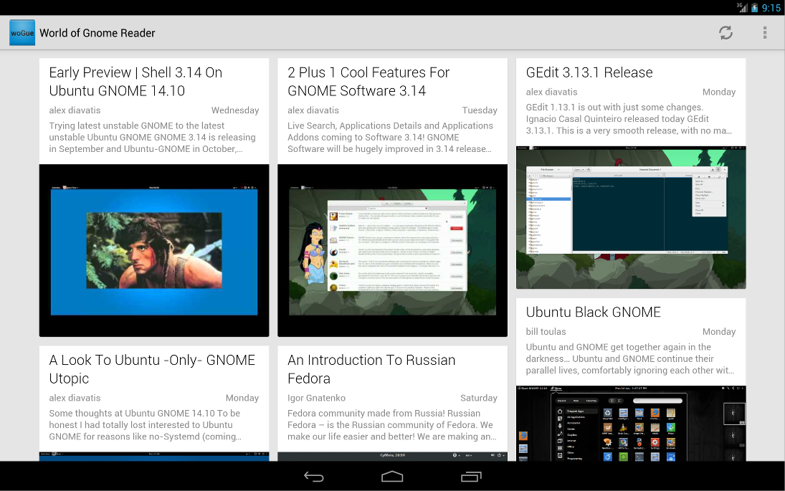
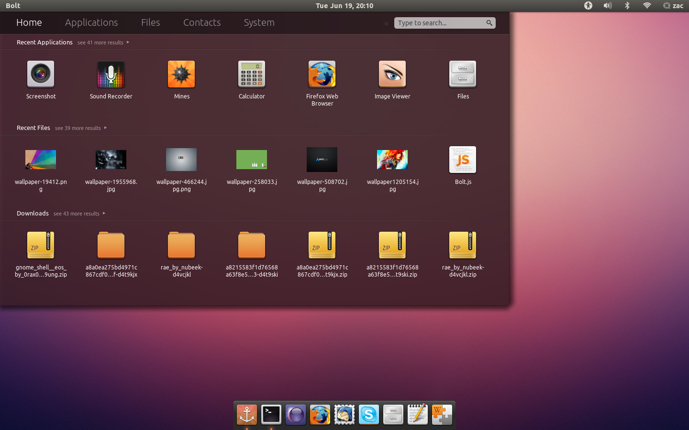
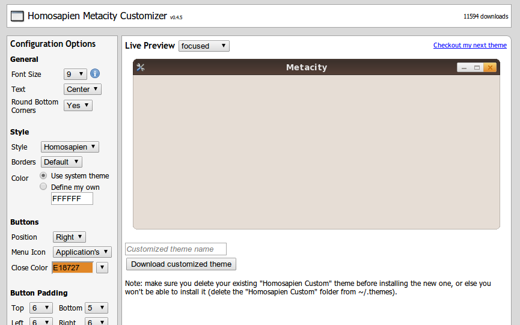
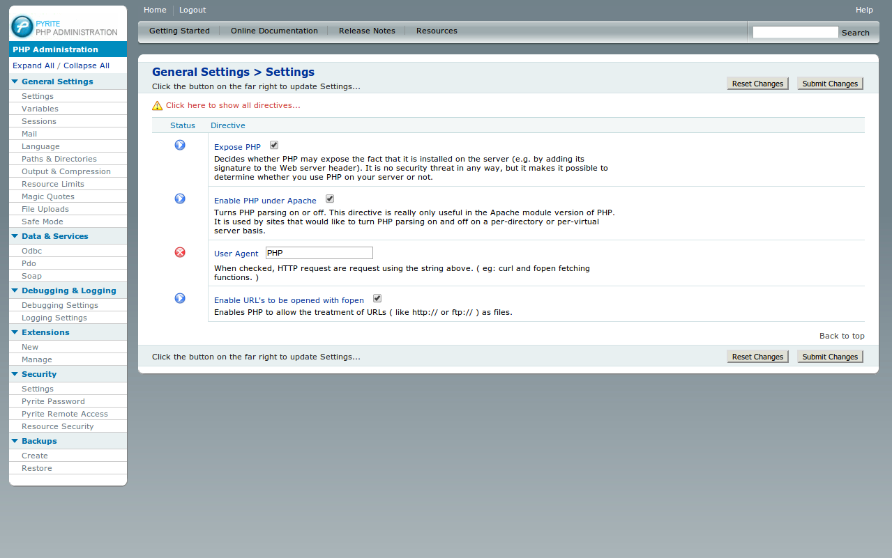

I'm an experienced senior full stack web developer who strives to create quality applications
using the latest technologies that make end users happy.
Developing since 1999.
A new digital platform that will change the way you think about advertising, loyalty and customer engagement. A global game of giving where we all win.
AWS | NodeJS (Babel ES6) | RabbitMQ/SQS/SNS | Redis | Postgres | Unit Testing | GrayLog | React | Stripe | PM2 | Pusher | Mandrill | Mixpanel | Vagrant | Gulp
Trevor trawls the web and automatically applies you for jobs you'll love, only interrupting you when there's interest for an interview. Clever Trevor.
AWS | NodeJS | MongoDB | AngularJS | Unit Testing | Gulp | Stripe
Hometrack is the leading company in housing intelligence and automated valuations in Australia and the UK, working closely with major banks, insurance companies, residential property valuers and state governments.
In 4 months I developed and launched a web application to AWS capable of supporting 30,000+ concurrent users.
I developed 12 micro-services that I integrated with RabbitMQ and I developed the queue workers to process jobs.
I integrated a 3rd party OAuth2 sign-in service while adding internal application hooks to call 3rd party API's as workflow progresses.
I introduced a build server to check for code errors, minify and combine assets and simplify deployment.
AWS | NodeJS | RabbitMQ | Redis | OAuth2 | Railo | SQL Server | AngularJS | Vagrant
I developed a personal project to extract data from raster images. I presented it to management and it was integrated to the business.
It processed 320,000 images when run across 10 servers as a distributed job, resulting in 4.5 million new data points for the modeling team.
AWS | NodeJS | DynamoDB
I created and developed an internal service to expose feature rich housing data to our entire suite of applications.
I developed extensibility into the service to enable future data to be incorporated quickly.
I developed an external web service that receives over 25,000 requests a day (as of May 2014), generating a new revenue stream.
SQL Server | ColdFusion | Web service
In 3 months I re-developed an existing application successfully winning a new contract and creating a new revenue stream.
I designed and developed a distributed asynchronous request/response external web service that has serviced over 20,000 requests (as of May 2014).
I integrated with a popular panel management system used by various lending institutions.
I co-developed a new simplified user interface that is both Desktop and Tablet friendly.
SQL Server | ColdFusion | Async API | 3rd Party Integration | AngularJS | HTML5 | CSS3
I designed, spec'd and developed a successful application that has valued over $850 billion in property from lending institutions.
I developed a data schema capable of storing differing 3rd party datasets reducing developer involvement from 3-4 hours to zero minutes, by creating a tool for non-developers to manage the process in 5 minutes.
I developed a method to execute SQL in parallel increasing performance from 20,000 to 120,000 operations per hour, a 500% increase.
I designed and developed a simple self-service user interface that allows drag 'n drop uploading, importing and processing of portfolio files.
SQL Server | ColdFusion | Parallel SQL Execution | JQuery | Drag and Drop | CSS3
I developed a personal project to geocode address strings in a new and unique way. I presented it to management and it was integrated to the business and is now used in 95% of applications.
I saved $30,000 per year in licensing fees by canceling a 3rd party solution.
I increased speed from 12 to 65 matches per second while maintaining accuracy, a 540% increase.
SQL Server
I developed an internal map service that is now used by over 95% of applications requiring a map.
I eliminated code duplication and removed the difficulty of working with different 3rd party imagery providers while providing rendering, transforming and styling of complex geometries and positioning of icon markers.
I developed a WMS web service and maps can be rendered to PNG or PDF.
JAVA | GIS | WKT | 3rd Party Providers | PDF
I played a lead role in developing an application that supported two locales, both running the same shipping code.
I introduced a dependency injection framework to reduce code duplication and to accommodate locale specific differences. Both locales benefited from bug fixes and improvements from each other.
I developed the frontend which was completely powered by AJAX requests.
SQL Server | ColdFusion | AJAX | PrototypeJS | OpenLayers
I co-created and developed a platform that generates over $1.5 million dollars in revenue with a high 92% renewal rate.
I co-created and developed a common data structure to store differing datasets. This gave us a competitive advantage due to the rapid pace new data could be added and deployed to clients.
I introduced spatial methods to transpose data to different geographies than originally sourced, vastly enriching the dataset available to clients.
I introduced a method to reduce the number of vertices for geometries in parent/child relationships reducing load times by 70% while improving client rendering performance.
I developed the frontend as a single-page application using a tiled map view (state-of-the-art at the time) to provide a rich user interface.
GIS | SQL Server | ColdFusion | AJAX | PrototypeJS | OpenLayers
I developed a personal project that I presented to management and it was integrated to the business. It is now used in 99% of applications.
I developed an internal Domain Service Layer to reduce code duplication and errors, maintain consistency and to ensure all applications had access to company-wide business logic and security.
Object-oriented
I developed an internal report service that completely removes the complexity of generating a PDF by utilising HTML & CSS, enabling any developer to quickly create a PDF report.
It is now used for over 95% of all reports generated across all applications.
JAVA | PDF | HTML | CSS
I developed a personal project (over the Christmas break) that was adopted by the business after presenting to management.
I developed a method to transcribe SVG charts directly into a PDF report. This gave us a competitive advantage as our charts on-screen and printed were sharp and crisp, while our competitors' were blurry.
PHP | SVG | PDF
I developed a personal project to create PDF reports that was adopted by the business. Prior to this our clients were supplied HTML pages in lieu of reports.
This was integrated into an existing product with paying clients to great response.
PHP | PDF
I created and developed an interactive mapping application to inform clients on the inner workings of the Realtime Valuation model, increasing growth and adoption rates for our most profitable application.
SQL Server | PHP | SVG
I co-created and developed this core business API which handles over 20,000 requests per month, with response times under 300ms, generating multi-million dollars in revenue annually.
I championed the need for an external web service that supported custom responses (to ease client integration and increase adoption) against the prevailing corporate inclination towards a standard website. I succeeded and this now accounts for 90% of all application revenue (as of May 2014).
I had a key role in spec'ing and developing the generic request/response formats for API requests.
SQL Server | ColdFusion | API | XML
I created and developed a shared configuration scheme which can be accessed natively across different programing languages eliminating code duplication while ensuring settings are consistent.
This is still used as of May 2014 in 99% of our applications.
XML | XSL
Native Android app with a card view layout, pull-to-refresh, swipe between stories, phone & tablet support and a light/dark theme.
A launcher that's a fusion of the Ubuntu dash, the Gnome-shell overview and the classic Gnome 2 menu.
One of the first online Gnome Metacity customization tools that allows you to create a custom theme to download and install.
Administration the php.ini file, the easy way, via a web interface allowing you to edit any setting, view logs and even enable extensions.
